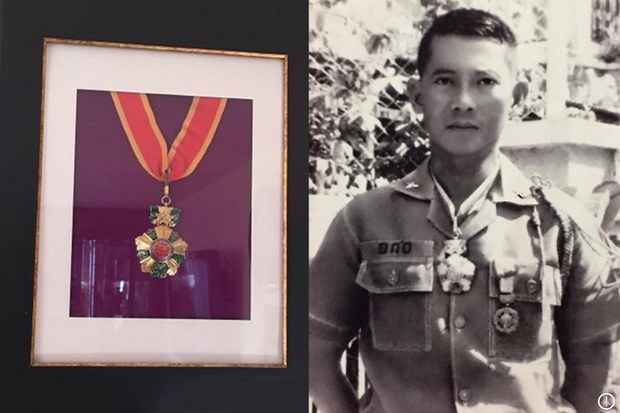

Kính tiễn biệt Thiếu Tướng Lê Minh Đảo
Để nhớ Ngày “Anh Tư Về Trời”
Kết thúc cuộc chiến dang dở không thành
Nơi Quê Nhà Ở Việt Nam.
(30/4/1975-19/3/2020).

.I- Giữa vũng lầy chính trị
Trong những ngày đầu tháng 4, 1975 Cựu Bộ trưởng Thông Tin Chiêu Hồi Hoàng Đức Nhã, nay giữ chức vụ cố vấn riêng của Tổng Thống Việt Nam Cộng Hòa Nguyễn Văn Thiệu, đã có mặt tại Singapore theo lời mời của Thủ Tướng Lý Quang Diệu. Cá nhân cố vấn Nhã rất ái mộ nhà lãnh đạo họ Lý, bởi vị nầy đã thành công trong quá trình cai trị (dẫu bị phê phán là độc tài, độc đảng theo thói tục của chính giới Tây Phương) bằng việc thực hiện cho người dân Singapore những điều mà chế độ cộng sản hứa hẹn “sẽ có nơi địa đàng trần thế”: Tự do, dân chủ, việc làm, phồn thịnh kinh tế, ổn định xã hội… Mức sống người dân Singapore được xếp hạng cao nhất Châu Á. Môi trường, thành phố, phi cảng Singapore được đánh giá là những địa điểm công cộng sạch nhất thế giới. Tháp Đôi ở thủ đô nầy có chiều cao nhất hơn hẳn toàn nhà Empire State Building hay Twin Towers của New York.
Thủ Tướng Diệu không mời Cố Vấn Nhã đến do liên lạc bình thường giữa những chính khách. Ông mời ông Nhã đến để trao gởi một “nguồn tin” quan trọng. Thủ Tướng Lý vào thẳng vấn đề: “Đừng để mất thì giờ vô ích, tôi mời ông tới đây bởi kết thúc (ở Việt Nam) sắp xảy đến. Rockefeller vừa hỏi ý kiến tôi cũng như những vị lãnh đạo Á Châu khác, liệu chúng ta có cách gì để đưa ông Thiệu ra đi hay không.”(2)
Hóa ra chuyến viếng thăm không chính thức các nước Đông Nam Á của Phó Tổng Thống Mỹ Rockefeller nhân dịp viếng lễ tang người lãnh đạo cuối cùng của thế hệ Thế Chiến thứ Hai, Thống Chế Tưởng Giới Thạch vừa qua (5 tháng 4) là để thông báo điều: “Đã đến lúc chính phủ Mỹ cần thay người cầm quyền ở Nam Việt Nam”. Thủ Tướng Lý không nói thêm điều gì khác – việc “ai” sẽ thay thế ông Thiệu là vấn đề của Sài Gòn với những người như Đại Tướng Minh, Khiêm, hoặc Cựu Phó Tổng Thống Kỳ… Ông chỉ thúc dục cố vấn Nhã: “Hãy khẩn báo cho ông anh của ông như thế mà thôi. Riêng ông nên ở lại đây. Đừng về lại Sài Gòn, tôi sẽ lo liệu cho gia đình ông ra khỏi nước. Người Mỹ cũng đã xếp đặt sẵn một nơi cho ông Thiệu lưu trú…”(3)
Không biết cuộc mạn đàm đã được thâu băng, cũng như nơi Dinh Độc Lập máy ghi âm mật (do văn phòng CIA Sài Gòn gài) luôn hoạt động, Nhã thông báo liền cho Tổng Thống Thiệu nguồn tin chẳng mấy phấn khởi nầy; một phần ông cố vấn cũng đã hiểu ra thực tế: “Giới quân nhân, những tư lệnh chiến trường đã không còn tin tưởng nơi ông tổng thống vốn xuất thân từ quân đội này nữa.”
Cuộc rút bỏ Tây Nguyên sau ngày 10 tháng Ba (ngày quân đội Bắc Việt tổng tấn công Ban Mê Thuột), tiếp theo lần di tản Huế, Đà Nẵng, Quy Nhơn, Nha Trang (cuối tháng 3) với thảm cảnh kinh hoàng của dân và lính vượt khỏi tất cả những dự kiến; làm tan vỡ sức chiến đấu, phá hủy quân trang cụ, vũ khí của hai Quân Khu I và II đã bày ra điều cùng cực phi lý và tàn nhẫn: Trung Tướng Nguyễn Văn Thiệu, Tổng Thống Việt Nam Cộng Hòa không nắm vững chính trị lẫn quân sự của tình thế. Chỉ riêng về mặt quân sự không thôi, ông cũng đã là một người chỉ huy mất khả năng kiểm soát chiến lược lẫn chiến thuật mà một nhà lãnh đạo cần phải có.
Nghĩ cho cùng cũng chẳng phải riêng của Tổng Thống Thiệu với tình thế Việt Nam. Lời thông báo của Phó Tổng Thống Rockefeller cũng không là ý kiến riêng của người lãnh đạo ở Tòa Bạch Ốc nhưng là phản ảnh thực tế về quyết định của chính giới Mỹ đối với tình thế chung cho toàn vùng Đông Nam Á. Ngày 12 tháng 4, Nam Vang thất thủ, người lãnh đạo Sirik Matak cùng tất cả bộ trưởng của chính phủ Long Boret (chỉ trừ một người thuận di tản theo đề nghị của Toà Đại Sứ Mỹ) là những nạn nhân đầu tiên của cách hành hình man rợ hơn cả thời Trung cổ do đám đao phủ Kmer Đỏ hành quyết. Họ không chết do bất ngờ, vì không lường được tính ác ghê rợn của lực lượng cộng sản Khmer mà hơn ai hết, vị cố vấn chính trị của tổng thống Campuchia đã có lá thư tuyệt mệnh gởi đến Đại Sứ Dean John của Hoa Kỳ với lời lẽ khẳng quyết bi tráng như sau: “Kính gởi Ngài Đại Sứ và các Bạn… Tôi chân thành cảm ơn lá thư ngài chuyển tới với đề nghị giúp tôi phương tiện đi đến vùng tự do… Nhưng hỡi ơi, tôi không thể bỏ đi một cách hèn hạ như thế được. Xin ngài cứ ra đi, và tôi cầu chúc ngài cùng đất nước Hoa Kỳ có được nhiều điều hạnh phúc dưới cõi trời nầy. Nếu tôi có phải chết thì cũng chết trên đất nước mà tôi vô cùng yêu quý dẫu cho đấy là điều bất hạnh, nhưng chúng ta ai chẳng sinh ra và một lần mất đi. Tôi chỉ phạm một lỗi lầm là đã tin vào ngài và tin vào những người Bạn Mỹ.“(4)
Lời báo động của người thân cận Hoàng Đức Nhã cùng tình thế bi thảm của Campuchia, lẫn thực tế tuyệt vọng của miền Nam khi phòng tuyến Phan Rang (mà cũng không bao giờ đã là một tuyến phòng thủ vững chắc được, bởi đấy là một vùng đất có thể tiếp cận đến bởi bất cứ hướng tiến quân nào, kể cả hình thái bao vây, chia cắt) bị tan vỡ, buộc Tổng Thống Thiệu phải hiểu ra rằng: Những lá thư bảo đảm của Tổng Thống Nixon với những lời trịnh trọng “Tự do và độc lập của Việt Nam Cộng Hòa luôn là mục tiêu tối thượng của chính sách đối ngoại của nước Mỹ. Tôi hằng dốc sức thực hiện mục ấy suốt cuộc đời chính trị của bản thân” (5) đã không còn mảy may giá trị, vì người viết như giòng chữ (cho là thực tâm kia) đã đi ra khỏi Tòa Bạch Ốc với tình cảnh của kẻ “phạm tội” sau vụ Watergate (9/8/1974).
Người thay thế ông, tổng thống không do dân cử, Gerald Ford, lại bị trói buộc toàn diện bởi Nghị Quyết Sử Dụng Vũ Lực Chiến Tranh đã được Quốc hội phê chuẩn từ tháng 11, 1973, cho dù Tổng Thống Nixon đã dùng quyền phủ quyết bác bỏ. Nghị quyết này thật sự là phần hiện thực hiến định của đạo luật cắt bỏ quỹ “Hoạt Động Tác Chiến” do Tu Chính Án Cooper-Church đệ trình Thượng Viện Mỹ nhằm hạn chế quyền lực sử dụng quân đội Mỹ ở Đông Dương từ 1970 (6) – Tất cả điều khoản, đạo luật này đã được lưỡng viện Quốc Hội Mỹ phê chuẩn thi hành sau khi ký Hiệp Định Paris (27 tháng 1, 1973) và Thông Cáo Chung của Kissinger cùng Lê Đức Thọ, ngày 13 tháng 7 cùng năm để “thúc đẩy các bên ký kết thi hành hiệp định “Tái Lập Hòa Bình tại Việt Nam (sic).”
Tổng Thống Nguyễn Văn Thiệu nhất quyết không để thân phận mình kết thúc tan thương oan khốc như tình cảnh của Cố Tổng Thống Ngô Đình Diệm, cũng không muốn “hiển thánh vị quốc vong thân” trước nòng súng của binh đội cộng sản. Ông dư biết “những kẻ thù chính trị sẽ không để cho ông yên thân; ông lại càng ngao ngán tình đời vì Cựu Phó Tổng Thống Kỳ đã xuất hiện lại với một khẩu P38 cặp kè bên hông hiện thực lời răn đe “phải làm một cái gì… và Sài gòn sẽ là một Stalingrad” như trong lần nói chuyện ở Trường Chỉ Huy Tham Mưu tại căn cứ Long Bình. Nhưng cốt yếu đối với người “bạn Mỹ”, người bạn mà vị chính khách Campuchia Sirik Matak bên nước láng giềng kia đã phẫn uất kêu lên lời tán thán – Ông Nguyễn Văn Thiệu phải ra tay trước – Vất bỏ gánh nặng mà ông cho là “vô lý” với luận cứ: “Người Mỹ đòi hỏi chúng ta làm một việc bất khả thể. Tôi đã từng nói với họ: Các ông đòi chúng tôi làm một việc mà các ông không làm nổi với nửa triệu quân hùng mạnh, với những viên chỉ huy tài giỏi, và tiêu hơn 300 tỷ (Mỹ kim) trong hơn sáu năm… Rồi bây giờ tương tự như các ông chỉ cho tôi ba đồng, bắt tôi mua vé máy bay hạng nhất, thuê phòng khách sạn 30 đồng một ngày, ăn bốn, năm miếng bíp-tếch, uống bảy, tám ly rượu vang mỗi ngày. Đấy là một chuyện hết sứ vô lý.” (7)
Sau khi so sánh cuộc chiến đấu của một dân tộc với cách thức đi ăn tiệc với giá biểu “kỳ cục” kể trên, ông cao giọng tố cáo người bạn quý không e dè: “… các ông để mặc chiến sĩ chúng tôi chết dưới mưa đạn pháo. Đấy là một hành động bất nhân của một đồng minh nhân.” (8) Ông chát chúa lập lại: “Từ chối giúp một đồng minh và bỏ mặc họ là một hành vi bất nhân.” (8 bis)
Giới chức cao cấp của Tòa Đại Sứ Mỹ ở đường Thống Nhất (đối diện với Dinh Độc Lập, nơi ông tổng thống đang nói cho buổi truyền hình trực tiếp) theo dõi đủ nội dung của bài nói chuyện với những lời lẽ nặng nề như trên (bài nói chuyện của một người đang cơn nóng giận chứ không phải ngôn ngữ ngoại giao của một vị nguyên thủ quốc gia, một chính khách lãnh đạo). Tuy nhiên, người Mỹ luôn là một người “bạn tốt“. Họ đã chuẩn bị cho ông một nơi an toàn và cách ra đi kín đáo (cũng không thể kín đáo hơn), thích hợp với “danh dự của một vị nguyên thủ” vì dù gì ông đã giúp họ cởi bỏ gánh nặng chiến tranh qua lần rút quân có tính “danh dự” khỏi Việt Nam theo điều khoản của Hiệp định Paris.
Tuy nhiên, cuối cùng lời của Ông Nguyễn Văn Thiệu có phần chính xác như câu nói bất hủ: “Đừng nghe những gì cộng sản nói mà hãy nhìn những gì cộng sản làm” vì quả thật pháo đang rơi xuống, đang trút xuống như mưa lũ trên đầu người lính… cũng trên đầu người dân. Đạn pháo, hỏa tiễn của binh đoàn quân cộng sản Bắc Việt (thuần là đơn vị quân đội Hà Nội) đang dội xuống như mưa lũ ở Long Khánh – Cửa ngõ phía Đông-Bắc dẫn vào Sài Gòn – nơi bản doanh Sư Đoàn 18 Bộ Binh do Thiếu Tướng Lê Minh Đảo giữ quyền tư lệnh – Vị tướng lãnh thăng cấp cuối cùng của quân lực để chứng thật cùng thế giới và lịch sử: Người Lính nào đã quyết tâm chiến đấu thực hiện nghĩa vụ Bảo Quân An Dân nơi Miền Nam. Và sự sụp vỡ ngày 30 tháng Tư, năm 1975 hoàn toàn vượt tầm đạn bắn ra từ nòng súng chiến đấu của họ – Quân Lực Cộng Hòa.
II- Mặt đối Mặt qua bãi lửa
Bình nguyên tỉnh Long Khánh trải rộng trên vùng rừng miền Đông Nam Bộ, tả ngạn sông Đồng Nai, trước đây vốn là Quận Xuân Lộc thuộc Tỉnh Biên Hòa. Năm 1955 Chính Phủ Việt Nam Cộng Hòa thành hình những đơn vị hành chánh mới, Xuân Lộc tách ra thành một tỉnh riêng với thủ phủ là vị trí của quận đường cũ nay được mang thêm danh xưng là Quận Châu Thành, Tỉnh Long Khánh. Long Khánh nằm trên ngã ba của Quốc Lộ 20 (đi Đà Lạt) và Quốc Lộ I, lối ra Trung, đường đi Hàm Tân, Phan Thiết. Sau thành công đánh chiếm Tây Nguyên (Vùng II) và Vùng I Chiến Thuật do sự rút bỏ hỗn loạn của quân đội Miền Nam (mà thật sự chỉ do quyết định toàn quyền, độc nhất của Tổng Thống NguyễnVăn Thiệu); phía cộng sản rút kinh nghiệm từ Mậu Thân (1968) và Tổng công kích Xuân-Hè 1972 (thất bại do phân tán lực lượng trên nhiều mục tiêu, lẫn lộn giữa “điểm-mặt trận chính” và “diện-mục tiêu phụ”); chiến dịch năm nay, 1975, Bộ Tổng Quân Ủy quân đội Miền Bắc quyết tâm tiêu diệt Miền Nam qua chiến thuật tập kích tấn công từ một điểm xong mở rộng ra, tránh giao tranh nếu gặp kháng cự mạnh để tất cả đồng nhất tiến về Sài Gòn – mục tiêu cuối cùng phải đánh chiếm của cuộc chiến tranh “giải phóng ngụy danh”…
Trung Ương Đảng ra lệnh cho Trung Ương Cục Miền Nam cùng tất cả lực lượng vũ trang phải hoàn thành công cuộc giải phóng Miền Nam. “Xung phong tiến lên tấn công Sài Gòn, mà hiện tại kẻ thù đang tan rã, không còn sức mạnh chiến đấu. Chúng có năm sư đoàn, chúng ta có mười lăm sư đoàn, chưa kể đến lực lượng hậu bị chiến lược. Chúng ta phải chiến thắng bất cứ giá nào: Đấy là quan điểm của Trung Ương Đảng. Khi tôi (Lê Đức Thọ) rời miền Bắc, các đồng chí ở Bộ Chính Trị đã nói rằng: “Đồng chí phải đoạt thắng lợi, đồng chí chỉ trở về với chiến thắng” (9)
Chiến dịch Hồ Chí Minh được đặt tên qua công điện 37/TK do chính Lê Đức Thọ, Chính ủy chiến dịch phổ biến đến với tất cả lực lượng vũ trang đang có mặt tại miền Nam: Mười lăm sư đoàn quân chính quy cộng sản Bắc Việt. Những danh xưng này cần phải viết đủ để trả lời cho những quan điểm chiến lược vạch nên từ Tòa Bạch Ốc, Ngũ Giác Đài, được phổ biến khắp hệ thống truyền thanh, truyền hình thế giới trong bao năm qua: “Chiến tranh Việt Nam là do lực lượng Việt cộng (những người “quốc gia yêu nước Miền Nam” nổi dậy lật đổ chính quyền Việt Nam Cộng Hòa); nếu lực lượng của Hà Nội có kể đến chăng thì cũng chỉ chiếm một phần rất nhỏ, chỉ đóng vai trò “yểm trợ” vì “98% của vấn đề (chiến tranh) là ở Miền Nam, chứ không là Miền Bắc”(10).
Bởi quan niệm như thế kia, nên hôm nay, sau lần ký Hiệp Định Paris hai năm, ba tháng, tình hình quân sự hoá nên tồi tệ như một điều tất yếu, và chắc rằng Lê Đức Thọ được chọn lựa giữ nhiệm vụ chính ủy cho chiến dịch đánh chiếm không phải do tình cờ, vô cớ – bởi đấy là kẻ được thế giới trao tặng giải Nobel Hòa Bình do đã thiết lập cùng Ngoại Trưởng Kissinger cái gọi là hiệp định “tái lập hòa bình tại Việt Nam” kia. Chúng tôi không đủ nhẫn tâm, trân tráo để viết hoa nên nhóm danh tự nầy – Vì nếu thế sẽ được đánh giá là “đã tham gia vào một quá trình lừa lọc – Quá trình đùa cợt và khinh miệt nỗi khổ đau của toàn Dân Tộc Việt” – Khối dân bi thương luôn cầu mong được sống một ngày bình an qua gần nửa thế kỷ sống trong lửa.
húng ta trở lại chiến trường với Tướng Quân Lê Minh Đảo và những người lính đang giữa trùng vây của lửa. Ở mặt trận Long Khánh. Ngay từ ngày đầu của năm 1975, Sư đoàn 18 đã phải đối phó với tình trạng căng quân ra giữ vững vùng lãnh thổ trách nhiệm, cùng tập trung lực lượng để chiếm lại phần đất đã bị lấn chiếm. Tiếng gọi là một sư đoàn, nhưng Tướng Đảo chưa hề tập trung đủ lực lượng cơ hữu để điều động trong một cuộc hành quân quy mô cấp sư đoàn. Đầu tháng Ba 1975, Trung Đoàn 48 lại tăng phái cho Sư Đoàn 25 trách nhiệm mặt trận Tây Ninh, vùng Tây Sài Gòn cũng chung Vùng III Chiến Thuật với Sư Đoàn 18. Thế nên khi trận chiến bắt đầu ngày 9 tháng 4, 1975 ông chỉ có một lực lượng sư đoàn (trừ) gồm những đơn vị:
– Chiến đoàn 43 do Đại Tá Lê Xuân Hiếu chỉ huy gồm trung đoàn 43 (trừ Tiểu Đoàn 2/43 đóng giữ các cao điểm quan trọng) gồm Tiểu Đoàn 2/52 (cơ hữu của Trung Đoàn 52;
– Tiểu đoàn 82 Biệt Động Quân Biên Phòng của Thiếu Tá Vương Mộng Long.
Trước khi trận chiến bùng nổ, Thiếu Tướng Đảo khẩn thiết yêu cầu viên tư lệnh quân đoàn, Trung Tướng Nguyễn Văn Toàn hoàn trả lại Trung Đoàn 48; khi nhận được trung đoàn nầy về, Tướng Đảo xử dụng đơn vị để trấn giữ mặt đông thị xã – đoạn đường từ Xuân Lộc đến thị trấn Giá Rai, mặt Bắc của Ngã Ba Ông Đồn đường đi vào Quận Tánh Linh, Tỉnh Bình Tuy, trung tâm của mật khu Rừng Lá mà từ đầu khởi cuộc chiến (1960) đã là một vùng bất khả xâm phạm, do đấy là hành lang chuyển quân từ đồng bằng, vùng biển (Vùng III của VNCH) lên miền Tây Nguyên.
Phải nói qua đơn vị kỳ lạ này với sự tồn tại tưởng như huyền thoại. Tiểu Đoàn 82 vốn thuộc Quân Khu II Tây Nguyên, khi mặt trận Ban Mê Thuộc bị vỡ, Thiếu Tá Long vừa đánh vừa rút lui xuống đồng bằng. Từ Ban Mê Thuột, Long đưa đơn vị vượt Cao Nguyên Di Linh băng rừng về Bảo Lộc (nằm trên Quốc Lộ 20 khoảng giữa đường đi Đà Lạt), ông tiếp tục băng rừng theo hướng Tây Nam về Long Khánh. Ngày 6 tháng 4 (gần một tháng sau trận Ban Mê Thuột, ngày 10 tháng 3), Tướng Đảo nhận được một công điện khẩn từ các toán tiền đồn. Một đơn vị lạ với y phục Biệt Động Quân xuất hiện. Sau khi kiểm chứng với Bộ Chỉ Huy Biệt Động Quân Quân Khu III (Biên Hòa), Tướng Đảo dùng trực thăng bốc toán quân của Thiếu Tá Long – một tiểu đoàn biệt động chỉ còn khoảng 200 người. Lực lượng Chiến Đoàn 43 có nhiệm vụ phòng thủ nội vi Xuân Lộc hợp cùng các đơn vị của Tiểu Khu Long Khánh do Đại Tá Phúc làm chỉ huy trưởng – Chiến Đoàn 52 của Đại Tá Ngô Kỳ Dũng gồm Trung Đoàn 52 (trừ Tiểu Đoàn 2/52 tăng phái như kể trên) và các đơn vị trinh sát, thiết giáp, pháo binh thống thuộc hành quân. Đơn vị nầy trấn giữ dọc Quốc Lộ 20 (Bắc-Tây Bắc Long Khánh) từ Kiệm Tân (cứ điểm chặn đường từ Đà Lạt xuống) đến Ngã Ba Dầu Giây (giao điểm của hai Quốc Lộ I và 20), nút chặn về Biên Hòa, nơi đặt bản doanh của Quân Đoàn III, Sư Đoàn 3 Không Quân, thị xã cách Sài Gòn 30 cây số về hướng Bắc.
Với quân số như kể trên, Sư Đoàn 18 Bộ Binh quả thật đã gánh một nhiệm vụ quá khổ, dẫu trong thời bình yên chứ chưa nói về tình thế khẩn cấp của tháng 4, 1975. Trước 1972, vùng này được tăng cường một lữ đoàn thuộc lực lượng Hoàng Gia Úc – Tân Tây Lan, Lữ Đoàn 11 Chiến Xa do Đại Tá Patton chỉ huy (con của Danh Tướng Patton của lực lượng thiết kỵ Hoa Kỳ trong Đệ Nhị Thế Chiến) cùng những đơn vị bộ binh, nhảy dù Mỹ; chưa kể đến Sư Đoàn Mãng Xà Vương Thái Lan tăng phái, trách nhiệm vùng Long Thành, dọc Quốc Lộ 15, đường đi VũngTàu. Sư đoàn 18 lại là một đơn vị tân lập (chỉ trước Sư Đoàn 3 Bộ Binh của Vùng I), nhưng những người lính cơ hữu cùng các đơn vị diện địa, tăng phái đã lập nên kỳ tích tưởng không thực vào trong lúc toàn bộ quân lực, đất nước thậm khẩn cấp nguy nan, những đại đơn vị đã vỡ tan vì cách điều quân “di tản chiến thuật” quái đản phát xuất từ Dinh Độc Lập.
Thành lập từ năm 1965, đầu tiên đơn vị có danh hiệu là “Sư Đoàn 10 Bộ Binh”, và quả như số hiệu không mấy may mắn này báo trước, theo báo cáo lượng giá hằng tháng SAME (System Advisor Monthly Estimation) của giới chức cố vấn Mỹ cao cấp trong năm 1967, sư đoàn bị xếp hạng là một trong những đại đơn vị yếu nhất của quân lực. Tính đến năm 1972, hiệu kỳ sư đoàn chỉ nhận một lần tuyên công. Nhưng tất cả điều nầy đã thuộc về quá khứ, năm 1974 đơn vị trở nên thành đơn vị xuất sắc nhất mang giây Biểu Chương Quân Công Bội Tinh (11), bởi một điều đơn giản nhưng vô cùng thiết yếu đã được thực hiện: Tướng Quân Lê Minh Đảo về nắm quyền chỉ huy đơn vị từ sau trận chiến Mùa Hè 1972, và ông đã dựng nên sự biến đổi thần kỳ kia với bản lãnh thực sự của một “võ tướng”: Sống-Chết cùng Binh Sĩ-Đơn Vị.
Phải, Thiếu Tướng Lê Minh Đảo không có gì ngoài những người lính gian khổ dưới quyền, những viên sĩ quan cấp úy trung đội trưởng, với quân số còn lại đúng “mười hai người” chờ đợi để chết trước lần một biển người, chiến xa, đại pháo dập tới (12). Nếu có một người (chỉ một người thôi) để ông có thể trao lòng tin cậy cùng là một vị tướng nổi danh liêm khiết – Thiếu Tướng Nguyễn Văn Hiếu, Tư Lệnh Phó Quân Đoàn III – Nhưng oan nghiệt và uất hận thay, trong giờ phút sôi lửa kia, vị tướng trung chính ấy đã chết vì một viên đạn bức tử tại văn phòng do “sẩy tay, lạc đạn khi chùi súng?!” (13)
Quả thật, Thiếu Tướng Lê Minh Đảo không còn ai, không có ai ngoài tập thể những Người Lính đang quyết lòng giữ chắc tay súng – Nhiệm vụ mà họ xả thân tận hiến từ một thuở rất lâu không hề nói nên lời. Trận thử sức cuối cùng, tháng 4, 1975 tại Xuân Lộc, Long Khánh là một dấu tích sẽ còn lại muôn thuở với lịch sử.
Chúng ta không nói điều quá đáng. Hãy nhìn sang phía đối phương để thử tìm so sánh, từ đấy lập nên phần thẩm định chính xác. Đối mặt binh đội của Tướng Đảo là Quân Đoàn IV cộng sản Bắc Việt do Trung Tướng Hoàng Cầm chỉ huy. Một quân đoàn vừa thành hình trong ngày 20 Tháng 7, 1974 theo sách lược chung của cộng sản Hà Nội – Toàn phần vất bỏ Hiệp Định Paris, quyết thanh toán Miền Nam bằng vũ lực với trận mở màn thử xem phản ứng của chính quyền, quân đội Mỹ: Tấn Công Thị Xã Phước Long thuộc tỉnh Phước Bình (Đông Bắc Sài Gòn, 12 Tháng 12, 1974). Sau lần toàn phần chiếm đóng Phước Long (6 tháng 1, 1975) mà chính phủ Mỹ hoàn toàn im lặng, cũng tương tự như phản ứng thụ động của Hạm Đội 7 Mỹ để mặc Hải Quân Trung Cộng chiếm đóng Trường Sa, tấn công tiêu diệt Hạm Đội Việt Nam, Bộ chính trị trung ương đảng cộng sản Hà Nội quyết định thanh toán Miền Nam bằng súng đạn, điển hình qua câu nói khoái trá của Phạm Văn Đồng trong buổi hội đầu năm 1975: “Cho kẹo Mỹ cũng vào lại Việt Nam“. (14)
Hoàng Cầm chủ nhân của loại bếp ém khói, là tiểu đoàn trưởng của lực lượng tấn công vào trung tâm phòng thủ Điện Biên Phủ năm 1954; khi chiến tranh khởi cuộc (1960), Hoàng Cầm giữ chức tư lệnh Sư Đoàn 312, chuyển vào Nam năm 1965 để chỉ huy Sư Đoàn 9 khi đơn vị này mới thành lập; Mậu Thân 1968, Cầm phụ trách tham mưu của Trung Ương Cục Miền Nam; Tổng Công Kích 1972, tiếp lên chức tham mưu trưởng và bây giờ, kể từ 1974 tư lệnh Quân đoàn 4, trách nhiệm tấn công Sài Gòn từ mặt Đông Bắc qua ngõ Long Khánh của Tướng Đảo. Tướng Hoàng Cầm có dưới tay ba sư đoàn: 6, 7 và 341, chưa kể lực lượng địa phương, yểm trợ thuộc Quân Khu 7 cộng sản. Tương quan lực lượng coi như 4 đánh 1. Nhưng cũng không hẳn thế, Tướng Hoàng Cầm còn được cả một bộ chính trị đảng cộng sản Hà Nội trực tiếp chỉ đạo, yểm trợ và tăng cường với Văn Tiến Dũng, Tổng tham trưởng quân đội Miền Bắc, Phạm Hùng, bí thư Trung ương cục Miền Nam, Lê Đức Thọ ủy viên Bộ chính trị, Bí thư chiến dịch… Tất cả đang có mặt tại Lộc Ninh, nơi chỉ cách chiến trường Xuân Lộc hơn 100 cây số đường chim bay.
Thọ vừa đến từ Hà Nội không phải theo “đường mòn Hồ Chí Minh” với ba lô trên lưng như cách “mô tả” thành thạo trong những cuốn sách “nghiên cứu” về chiến tranh Việt Nam; Thọ đến từ sân bay Nam Vang, đi xe hơi đến biên giới Việt-Miên, xong dùng Honda tới Lộc Ninh (để tránh phi cơ và biệt kích của phía VNCH phát hiện). Trước những nhân vật kể trên, Trần Văn Trà, Tư lệnh Khu 7 báo cáo về tình hình quân sự. Phạm Hùng hỏi về tiếp liệu đạn dược; viên cán bộ phụ trách hậu cần trả lời: “Báo cáo đồng chí, ta có đủ đạn để bắn (bọn ngụy) sợ đến ba đời…” (15)
Đấy không phải là lời nói đùa, vì sau này khi thắng lợi nghiêng về phía quân Cộng Hòa, bộ tư lệnh mặt trận (cộng sản) đã cho thay thế Tướng Hoàng Cầm bằng Trần Văn Trà, vốn là người chỉ huy chiến trường miền Đông từ chiến tranh 1945-1954; và tăng cường thêm Sư Đoàn 325, đơn vị tổng trừ bị quân đội miền Bắc, lực lượng nỗ lực chính đánh chiếm Nha Trang, Phan Rang đầu tháng 4, và Trung Đoàn 95B biệt lập từ vùng châu thổ Sông Cửu Long kéo lên tăng cường – nâng tỷ số tác chiến (ban đầu) lên thành 5 đánh 1.
III- Trận Đánh
Thiếu Tướng Tư Lệnh Lê Minh Đảo chuẩn bị chiến trường đến mức được coi là toàn hảo. Lấy kinh nghiệm đau thương của những đơn vị bạn thuộc hai Quân Khu I và II: Sở dĩ các đơn vị này mất sức chiến đấu mau chóng vì không có người lính nào còn được khả năng chiến đấu khi trong tay họ thay vì nắm chắc vũ khí bấy giờ chỉ để bế đứa con nhỏ, lưng cõng cha, mẹ già bị nạn. Bằng tất cả mọi phương tiện có được, Tướng Đảo cho di tản toàn bộ gia đình binh sĩ về hậu cứ Long Bình và tổ chức một hậu phương an lành, tương đối đầy đủ cho tất cả. Cất bỏ được nặng gánh gia định, người lính chỉ còn một hướng trước mặt – hướng địch quân tiến tới.
Pháo binh là một yếu tố chiếm giữ phần lớn quyết định sự thắng, bại chiến trường. Một khuyết điểm mà quân lực cộng hòa thường vấp phải là luôn tập trung pháo binh lại một địa điểm để dễ chỉ huy, điều động. Nay Tướng Đảo thay đổi chiến thuật, ông phân tán pháo binh lên những cao điểm như Núi Thị (bên cạnh Đường 20 lên Định quán, đi Đà Lạt), đồi Mẹ Bồng Con (cạnh Quốc Lộ I, đường về Biên Hòa), những cao điểm phía Đông và Đông Nam Xuân Lộc, nơi ngã ba Tân Phong (cũng là một vị trí di động của Bộ chỉ huy; phần sau của chiến trận, giai đoạn rút lui về Bà Rịa (Phước Tuy), dọc Tỉnh Lộ 2; những vị trí pháo này sẽ yểm trợ vô cùng hữu hiệu cho đoàn quân di tản). Tuy phân tán nhưng khi tác xạ, những vị trí pháo này cùng bắn một lượt nên “tập trung được hỏa lực vào một mục tiêu” mà địch không dò tìm, phát hiện được vị trí pháo bắn đi (để phản pháo).
Thứ đến yếu tố an toàn cho Bộ chỉ huy là một yêu cầu tối thượng phải thực hiện. Tướng Đảo cho thiết lập những vị trí chỉ huy khác nhau được đánh số 1,2,3… Khi một vị trí bị pháo, ông cho di chuyển qua vị trí thứ hai, và luôn thay đổi trong suốt trận đánh (vị trí thứ nhất ở nhà ông trong thị xã; cái thứ hai ở Tân Phong; thứ ba trong một vườn vú sữa phía Đông của vị trí thứ hai). Để không cho đối phương an toàn trong vùng họ chiếm giữ, ông tổ chức những trung đội thám sát hoạt động đằng sau phòng tuyến địch, chỉ định vị trí tập trung quân, vị trí pháo binh (địch) xong gọi pháo binh (bạn) bắn tiêu diệt. Điểm cao nhất của thị xã, Trường Trung Học Hòa Bình, ông thiết trí trung tâm đề kháng với Đại Đội Trinh Sát Sư Đoàn do viên đại úy cứng cựa nhất trong số những sĩ quan đại đội trưởng, Đại Úy Lê Phú Đa, Khóa 25 Đà Lạt. (16)
Và cuối cùng, bảo mật liên lạc truyền tin của ta, khai thác truyền tin của địch để phát hiện ý đồ, cách điều quân, các hướng tiến quân của đối phương để chặn đánh, giải quyết chiến trường, phá vỡ mưu định tấn công của giặc. 5 giờ 40 sáng ngày 9 tháng 4, 1975- “Giờ H của Ngày N”, chiến dịch đánh chiếm Xuân Lộc bắt đầu (17) với một trận mưa pháo 2.000 quả đạn từ nhiều vị trí cùng đổ xuống trung tâm thị xã Xuân Lộc lập lại cảnh tàn sát của một ngày năm 1972, cũng buổi tháng 4 tại An Lộc.
Chính xác một giờ sau, 6 giờ 40, tám xe tăng được lính Trung Đoàn 165, đơn vị tiền phong Sư Đoàn 7 tùng thiết xông vào trung tâm thị xã Xuân Lộc, nơi đặt bộ chỉ huy Sư Đoàn 18. Lính cộng sản ngỡ rằng sau đợt pháo hung hãn, và đội hình ào ạt, bề thế của những chiếc T54, thế nào cũng sẽ tràn ngập mục tiêu dễ dàng như đã xảy ra ở những mặt trận “không cần giao tranh” nơi Vùng I và II của tháng 3 vừa qua. Họ cũng được học tập, “Sư Đoàn 18 chỉ là một đơn vị bộ binh tầm thường, nếu không nói là yếu kém.”
Nhưng hoàn toàn không phải là như thế, những xe tăng này mắc kẹt giữa bãi mìn của một hệ thống tám lớp kẽm gai và mìn bẫy mà Thiếu Tướng Đảo đã sẵn bố trí; không những chỉ thế, những phi cơ A37 và F5 từ phi trường Biên Hòa được gọi đến chỉ sau ít phút cất cánh, và trên đồng trống, giữa những khu rừng cao su đều đặn, đội hình của toán quân tùng thiết, chiến xa cộng sản trở nên thành mục tiêu lộ liễu, trần trụi. Nhưng lính bộ binh của Trung Đoàn 165 cộng sản không nhận ra chỉ dấu thất bại, họ tiếp tục tiến lên đợt xung phong thứ hai với những chiến xa còn lại. Lính Đại Đội 1, Tiểu Đoàn 3, Trung Đoàn 48 đã đợi sẵn với “hỏa tiễn 2.75 ly” đặt trên giá hai chân. Lưu ý yếu tố một đại đội đương cự một trung đoàn – tức là tỷ lệ “1 chống 16”; và hỏa tiễn 2.75 vốn là vũ khí cơ hữu của trực thăng vũ trang, sau khi quân đội Mỹ rút đi, khối lượng hỏa tiễn này trở nên thặng dư, Thiếu Tướng Đảo biến chế thành vũ khí bộ binh dùng để chống chiến xa bằng cách đặt trên giá tre hai chân, kích hỏa bằng pin, bắn hạ ngay những chiến xa nầy trên tuyến phòng thủ cuối cùng, nếu như thoát được những lớp mìn bẫy tiền tuyến.
Mặt Đông của thị xã, dọc Quốc Lộ I, Trung Đoàn 209 (cũng của SĐ 7) số phận cũng không mấy khả quan hơn – bởi họ gặp một đơn vị đang cơn uất hận – Tiểu Đoàn 82 Biệt Động Quân của Thiếu Tá Vương Mộng Long. Lính biệt động đánh để trả hận lần lui quân bi thảm của tháng trước từ mặt trận Ban Mê Thuột, hai tiểu đoàn của Trung Đoàn 209 bị chôn chân trước tuyến phòng thủ của 82 Biệt Động và Tiểu Đoàn 3/48 của Tướng Đảo. Sau nầy Hoàng Cầm ghi lại trận đánh trong Hồi Ký Lịch Sử Quân Đội Nhân Dân: “Những đợt xung phong đánh vào sở chỉ huy của Sư Đoàn 18 và hậu cứ Trung Đoàn 52 ngụy đều không thành công. Chiến sĩ ta giành giựt với đich từng đoạn giao thông hào, qua mỗi căn nhà, căn phố. Điều đáng ngạc nhiên là cuộc tấn công đã bị chặn lại không phải chỉ do pháo binh và không quân yểm trợ, hệ thống phòng thủ vững chắc và sức chiến đấu ngoan cố của Trung đoàn 43 ngụy, nhưng điều đáng nói là Đảo đã tổ chức cho từng người lính thuộc sư đoàn mỗi một vị trí chiến đấu..” (18)
Mặt trận phía Bắc của Sư Đoàn 341 tương đối khả quan hơn, một phần địa thế không thích hợp cho việc bố phòng của Chiến Đoàn 52 do Trung Tá Ngô Kỳ Dũng chỉ huy. Viên tư lệnh sư đoàn cộng sản Trần Văn Trấn đi theo với Trung Đoàn 266, đích thân chỉ huy cuộc tiến công. Bộ đội cộng sản tùng thiết thoạt tiên mở được đường qua lớp kẽm gai, mìn bẫy thứ nhất tiến gần đến vùng “Hố Heo Rừng”, nơi Quốc Lộ I chạy một đường quanh gắt trước khi đổ vô thị xã. Nhưng quả như ước tính của Tướng Đảo, đại đội trinh sát của Đại Úy Đa giăng một hàng lưới lửa bằng đại liên 50 chống chiến xa, hiệp cùng máy bay AC119 Hỏa Long tự tầng trời đan kín thêm bằng đại liên Minigun bốn nòng chống biển người vô cùng hữu hiệu.
Sư Đoàn 341 vốn là một sư đoàn tân lập gồm những thanh thiếu niên vùng Quảng Bình vào Nam do nhu cầu “chính trị-quân sự” hơn là một đơn vị tác chiến thuần thành, nên đám tân binh thiếu kinh nghiệm của đơn vị này quá hoảng sợ hỏa lực của đại đội trinh sát, phi cơ Hỏa Long chạy dạt qua phần đất của các Đại Đội 340 và 342 Địa Phương Quân Tiểu Khu Long Khánh. Thật không may, đấy lại là những đại đôi địa phương cự phách của tiểu khu, cũng là của vùng chiến thuật, nên cuối cùng đám lính trẻ tuổi của hai Tiểu Đoàn 5 và 7 thuộc Trung Đoàn 266 phải tan hàng, chạy vào lẫn trốn trong khu vực dân cư, bến xe, nhà thờ, trung tâm thị xã. Đại Đội Trinh Sát của Đại Úy Lê Phú Đa lập lại thành tích “1 chống 16 – Một đại đội chặn đứng mũi tiến công một trung đoàn.”
Tưởng nên nói rõ cũng không thừa chi tiết: Theo tổ chức “tứ chế” của quân đội cộng sản, một tiểu đoàn có 4 đại đội; một trung đoàn có 4 tiểu đoàn. Vậy Trung Đoàn 266 kia đã xử dụng đến 16 đại đội để tấn công một đại đội trinh sát của Đa. Cho dù rằng Sư Đoàn 341 báo cáo đã chiếm được một vài cơ sở trong thành phố như dinh Tỉnh Trưởng, bến xe, khu chợ, nhưng đến 11 giờ cùng ngày, Thiếu Tướng Đảo tương kế tựu kế, sử dụng những đơn vị trừ bị, Tiểu Đoàn 1/48 và chiến xa của Chi Đoàn 1/5 đẩy Trung Đoàn 270 ra khỏi ngoại vi thị xã; phần bên trong Xuân Lộc. Ông phối hợp với vị Tỉnh Trưởng, Đại Tá Phúc dùng hai đại đội địa phương tăng cường Tiểu Đoàn 1/43 diệt gọn tất cả các ổ chống cự lẻ tẻ do những đám nhỏ của Trung Đoàn 266/Sư Đoàn 341 xâm nhập được nhân cơ hội đợt pháo kích sáng sớm.
Tổng kết ngày chiến trận đầu tiên, chỉ riêng Sư Đoàn 341 đã bị thiệt hại khoảng 600 chết và bị thương, cùng một số tù binh (ba mươi người). Đám thanh thiếu niên nông thôn miền Bắc ngồi ngơ ngẩn giữa nhà cửa, gạch ngói tan vỡ do đạn pháo họ vừa thực hiện, hiểu mường tượng ra về một phần ý nghĩa của công tác “giải phóng” sau lần giao tranh với quân lực Miền Nam. Buổi chiều, Thiếu Tướng Đảo khi đi thanh sát mặt trận bên trong thị xã, ông không quên ra lệnh cho Phòng Quân Tiếp Vụ Sư Đoàn trích một số khẩu phần lương khô để nuôi ăn đám tù binh còn rất mới. Chiều tối ngày 9 tháng 4 không hẳn là thời gian nghỉ ngơi, phía cộng sản lại dụng tâm gây căng thẳng bằng cách pháo vào khu vực thị xã thêm một loạt liên tục, cũng khoảng 2.000 ngàn quả đạn trên khắp các vị trí, không loại trừ khu vực dân chúng, nhà thương, chùa, nhà thờ… Những địa điểm mà họ ước tính dân chúng hay tập trung để trú ẩn do có ý nghĩ tội nghiệp cam chịu: “Việt cộng sẽ tránh các nơi dân cư đông đúc, chốn tôn nghiêm, nhà thương trường học…”
Năm 1972, ở An Lộc người dân đã nghĩ như thế và pháo cộng sản cũng đã đánh giá Bệnh Viện Bình Long là một mục tiêu phải bị hủy diệt vì bọn ngụy sẽ tải thương người bị thương đến đấy. Đêm 9 rạng 10, ngày 11 tháng Tư, 1975 ở Xuân Lộc cuộc pháo kích cũng mang chung một tính chất với cường độ ác liệt hơn – do để yểm trợ cho bộ binh tiến chiếm bởi Bộ tư lệnh Quân Đoàn 4, cộng sản vẫn không tin quân phòng thủ Xuân Lộc đứng vững sau hai cuộc tấn công.
5 giờ 30 sáng ngày 11, đợt tấn công thứ hai bắt đầu. Sư Đoàn 341 tiến chiếm từ hướng Tây Bắc dọc Quốc Lộ 20; Sư Đoàn 7 từ mặt Bắc đâm thẳng vào thị xã; Sư Đoàn 6 từ hướng Đông, chân núi Chứa Chan nơi đặt Bộ tư lệnh chiến dịch của Quân Đoàn 4. Tất cả ba mũi dùi đồng hẹn ở điểm đến – trung tâm Thị Xã, Bộ Tư Lệnh Sư Đoàn 18. Kết quả cũng tương tự như ngày 9, quân Cộng Hòa giữ chắc vị trí, có khác chăng thêm một số chiến xa bị bắn hạ trên tuyến phòng ngự và một số tù binh bị bắt. Những ngày chẳng mấy vinh quang này được Hoàng Cầm viết lại trong Lịch Sử Quân Đội Nhân Dân: “Trong ba ngày đầu tiên của chiến dịch, Sư Đoàn 7 bị tổn thất 300 chiến sĩ; Sư 341 thiệt hại 1.200… Cụ thể tất cả pháo 85 và 57 ly đồng bị phá hủy “(19).
Cùng lúc Văn Tiến Dũng cũng phải thú nhận trong Đại Thắng Mùa Xuân: “Từ ngày đầu mặt trận Xuân Lộc đã diễn ra vô cùng gay go, ác liệt. Những sư đoàn của ta tổ chức nhiều đợt tấn công vào thị xã, đánh đi đánh lại để chiếm từng vị trí, và phải đẩy lui nhiều cuộc phản công của địch.” (20)
Cùng ngày Không Quân VNCH cũng góp thêm vào chiến thắng qua hủy diệt hơn 100 xe quân sự tăng viện cho mặt trận. Ở Sài Gòn, không khí lạc quan hừng lên, Tổng Thống Thiệu thúc dục Tướng Toàn cố gắng giữ vững Xuân lộc để có thế đảo ngược tình thế… để “B52 có thể trở lại!” Tướng Toàn xử dụng Lữ Đoàn 3 Thiết Kỵ của Chuẩn Tướng Trần Quang Khôi từ Trảng Bom cố mở đường tiếp cận với cánh quân Xuân Lộc, nhưng lực lượng thiết kỵ không thành công trong việc phá chốt ở Ấp Hưng Lộc.
Không thành công trong việc dùng chiến xa để giải toả áp lực cộng sản tại Xuân Lộc, Tướng Toàn xử dụng một thành phần hữu hiệu hơn – Lữ Đoàn 1 Nhảy Dù gồm bốn tiểu đoàn 1, 2, 8 và 9 được Tiểu Đoàn 3 Pháo Binh Dù trực tiếp yểm trợ. Cuộc hành quân không vận lớn nhất của trận chiến thực hiện trong hai ngày 11, 12 đưa đơn vị tổng trừ bị cuối cùng của Miền Nam vào trận. (20)
Sự xuất hiện của lực lượng nhảy dù tại trận địa đặt nên vấn đề nghiêm trọng đối với tập thể lãnh đạo Bộ tư lệnh chiến dịch của Cộng quân. Chiều ngày 11 tháng Tư, Văn Tiến Dũng, Lê Đức Thọ, Trần Văn Trà duyệt soát lại kế hoạch tấn công theo chiều hướng mới. Dũng có ý kiến: “Nếu địch tăng cường lực lượng phòng thủ Xuân Lộc thì ta không cần phải tập trung lực lượng để tấn công chúng nữa… Chúng ta nên sử dụng sức mạnh của mình để đánh những lực lượng ngoại vi (hàm chỉ Lữ Đoàn I Dù) trước khi chúng đặt chân xuống đất. Cũng nên dùng pháo tầm xa phá hủy căn cứ Biên Hòa để máy bay chúng không thể cất cánh.”
Nội dung buổi hội cũng bàn thảo lại chiến thuật tấn công chính diện mà đã không đem lại kết quả từ bốn ngày qua. Hẳn Trà và giới chức lãnh đạo Trung ương Cục không quên lần tấn công thất bại An Lộc trong Mùa Hè 1972, cũng trên địa bàn Quân Khu III này với lực lượng Quân Khu 7 cộng sản (21). Theo quan điểm của Dũng, Tướng Cầm, Tư lệnh Sư Đoàn 7 ra lệnh cho các Trung Đoàn 165, 266 tiếp tục giữ vững vị trí đang trách nhiệm để sau đó từ từ rút đi, riêng Trung Đoàn 209 trở hướng tấn công vào đơn vị nhảy dù vừa nhảy xuống trận địa.
Tóm lại, Bộ tư lệnh chiến dịch quyết định mở một mặt trận giả (để đánh lạc hướng quân phòng thủ) bằng hai cuộc tấn công chính diện vào vị trí đóng quân của Tiểu Đoàn 1/43 (có nhiệm vụ giữ thị xã) để phía quân đội Cộng Hòa nghĩ rằng phía cộng sản vẫn cố công dứt điểm Xuân Lộc theo như kế hoạch ban đầu – Trong khi chuyển hướng tấn công bằng cách đi vòng Xuân Lộc để (thực sự) tiến thẳng về Sài Gòn. Trần Văn Trà thay thế Hoàng Cầm để trực tiếp thực thực hiện kế hoạch.
Ngày 13 tháng 4, Trà họp ban tham mưu của Quân Đoàn 4 để thông báo về việc thay đổi kế hoạch với luận cứ chính xác: “Địch tăng cường phòng thủ Xuân Lộc sẽ gây nhiều bất lợi cho ta nếu cứ tiếp tục tấn công thị xã. Thế nên, nếu chúng ta tiến chiếm Dầu Giây (Nam Xuân Lộc, trên Quốc Lộ I, lối về Biên Hòa) thì Xuân Lộc không còn nằm trong tuyến phòng thủ của chúng nữa. Đồng thời ta xử dụng pháo tầm xa 130 ly pháo sân bay Biên Hòa thì địch sẽ bị hạn chế khả năng cho phi cơ xuất kích yểm trợ.” (22)
Trong chiều hướng của kế hoạch nầy, lực lượng cộng sản dần rút đi, nới rộng vòng đai phòng thủ của thị xã. Tướng Đảo lập tức ra lệnh cho các đơn vị chiếm lại những vị trí bị phía cộng sản chiếm giữ, tiếp nhận thực phẩm, quân trang, đạn dược và tải thương. Cũng quả thực ông không biết được sự thay đổi quan trọng về kế hoạch của Trung Ương Cục Miền Nam chỉ đạo từ Hà Nội. Nhưng ông làm được gì hơn với chức vụ tư lệnh một sư đoàn bộ binh trong giờ phút nguy nan nhất của cuộc chiến – mặt nổi của lần xếp lại “một trật tự mới trên toàn thế giới”.
Hai trái bom CBU 55 “Daisy Cutter” nặng 15.000 cân Anh rơi xuống từ lòng chiếc C130 phá toang một vùng rộng lớn trong phòng tuyến của quân cộng sản dọc Quốc Lộ 20 tăng cường thêm sự quyết tâm giữ vững Long Khánh của phía quân Cộng Hòa, nhưng cũng chính là màn khói (bất đắc dĩ phải chấp nhận) giúp cho lần rút đi của bộ đội cộng sản với 235 xác đếm được trên trận địa thêm phần hợp lý. Không một ai trong Bộ Tư Lệnh Quân Đoàn III ở Biên Hòa, nơi Phòng hành quân Tổng Tham Mưu Sài Gòn có ý niệm địch sẽ siết chặt Biên Hòa-Sài Gòn với hai gọng kềm (hướng Bắc và Đông) bằng cách cắt Quốc Lộ I ở Dầu Giây và Quốc Lộ 15 ở Long Thành qua thay đổi quan niệm chiến thuật theo tình hình thực tế nên bỏ qua Long Khánh nơi họ đã thực sự thất bại – và biến thất bại nầy thành một kế nghi binh.
Kế sách này càng thêm hữu hiệu khi mặt trận được tăng cường thêm hai đơn vị mới, Sư Đoàn 325, tổng trừ bị quân đội Miền Bắc, đơn vị chủ lực trong trận tấn công Nha Trang, Phan Rang ngày đầu tháng 3; và Trung Đoàn 95B biệt lập từ đồng bằng Sông Cửu Long kéo lên tăng cường. Tòa Đại Sứ Mỹ phấn khởi trước chiến thắng Long Khánh cố nài Quốc Hội Mỹ chuẩn chi $722 triệu quân viện khẩn cấp cho Việt Nam, nhưng trong phiên họp ngày 17 tháng 4, Ủy Ban Quân Sự Thượng Viện bác bỏ thẳng thừng như câu nói bất cận nhân tình của hai Thượng Nghị Sĩ Jacob Javits và Edmund Muskie trong show truyền hình đại chúng “Face the Nations”: “Cho tiền để lo việc di tản thì bao nhiêu cũng được chứ một xu cho ngân sách quân sự cho Thiệu cũng không có”. (23)
Hai con người nầy trong ngày 15 tháng Ba vừa qua cũng đã “cứu giúp” toàn bộ Dân Tộc Campuchia với giá tiền đúng $82,5 triệu đô-la Mỹ. (23bis).
Đây là quan điểm thống nhất của Thượng lẫn Hạ Viện Mỹ hiện do Dân Chủ nắm đa số mà không thiếu mặt hôm nay với Joe Biden, hai nhiệm kỳ Phó Tổng Thống thời Obama (2008-2016), cũng là ứng viên đảng Dân Chủ sáng giá nhất của trong cuộc bầu cử năm nay 2020.
Chiến trận lắng xuống, các đơn vị cộng sản dần rút đi, chỉ còn pháo kích cầm chừng vào các vị trí phòng thủ. Ngày 20 tháng 4, Tướng Toàn và Đại Tá Thọ, Trưởng Phòng Hành Quân Quân Đoàn III đích thân đến giao cho Tướng Đảo một lệnh mơ hồ như vô cùng kích động: Rời bỏ Xuân Lộc về bảo vệ mặt trận Sài Gòn. Hóa ra quân cộng sản đã hoàn tất kế sách bỏ trống Xuân Lộc từ một tuần trước. Thiếu Tướng Đảo phản đối, nhưng viên tướng tư lệnh khẳng định: Đó là lịnh của ông Thiệu! Thiếu Tướng Lê Minh Đảo chỉ có đúng nửa ngày để hoàn tất một kế hoạch rút quân bao gồm lực lượng một sư đoàn cơ hữu cùng các đơn vị tăng phái và yểm trợ, chưa kể thành phần diện địa của Tiểu Khu Long Khánh. Hành quân rút lui là hình thái hành quân khó nhất – Bởi đã mang sẵn mầm thất bại – Những danh tướng của quân sử thế giới mấy ai thực hiện được kể cả Hốt Tất Liệt, Napoléon, Rommel…
Nhưng như một phép mầu – một mầu nhiệm do trí tuệ và dũng lược kết hợp nên thành, cộng với lòng yêu quý chiến sĩ, đơn vị của một tướng lãnh trên chiến địa. Thiếu Tướng Lê Minh Đảo đã hoàn tất cuộc lui binh về Bà Rịa, bảo toàn đơn vị, vũ khí, thậm chí đến hai khẩu pháo 175 ly hạng nặng cũng giao lại đủ cho quân đoàn. Cũng một phần, lực lượng giữ phần hậu vệ đoàn di tản là Lữ Đoàn 1 Nhảy Dù do Trung Tá Nguyễn Văn Đỉnh chỉ huy. Trung Tá Đỉnh là Tiểu Đoàn Trưởng Tiểu Đoàn 6 Dù – Đơn vị đã giải tỏa An Lộc trong trận đánh ngày 8 tháng 6, 1972 mà đơn vị cộng sản đóng chốt ở Xa Cam, Nam An Lộc chỉ còn đúng một người – Tù binh tên Nguyễn Văn Tiền.
Cũng có một điều cần ghi thêm là Chuẩn Tướng Lê Quang Lưỡng, Tư Lệnh Sư Đoàn Dù đã bất chấp lệnh của Tổng tham mưu, vất bỏ mưu đồ “xé lẻ” đơn vị bách thắng này của ông Thiệu (do lo sợ một cuộc đảo chánh), nên đã gởi một đơn vị nhảy dù khác – Tiểu Đoàn 7 Nhảy Dù do Trung Tá Nguyễn Lô. Lô “lọ rượu” đơn độc đưa quân đi ngược Tỉnh Lộ 2 (từ Bà Rịa – Phước Tuy lên Long Khánh) đón đoàn quân di tản. Lô dẫn quân đi như ánh chớp, và Tiểu Đoàn 7 Dù là đơn vị cuối cùng chặn giặc nơi Cầu Xa Lộ, cửa ngõ chính của Sài Gòn ở hướng Bắc.
IV- Kết Từ
Khi Dương Văn Minh ra lệnh đầu hàng, buông súng, Thiếu Tướng Lê Minh Đảo dừng quân trên xa lộ Biên Hòa, nhìn vào hướng Trường Bộ Binh Thủ Đức, Long Thành, Bà Rịa, và xa kia Xuân Lộc, Long Khánh, gần hơn Trung Liệt Đài của Nghĩa Trang Quân Đội, Long Bình… Ông thấy thấp thoáng bức tượng Tiếc Thương (24) tạc hình Người Lính Chờ Đợi in hình trong không gian mờ khói đạn. Người lính cuối cuộc chợt thoáng nhớ những lời thơ ngắn “Vì anh là lính áo rằn. Ra đi nào biết mấy trăng mới về…”
Những câu thơ của em ông, Trung Tá Lê Hằng Minh – Tiểu Đoàn Trưởng Tiểu Đoàn 2 Thủy Quân Lục Chiến “Trâu Điên”, người lính đã ra đi từ ngày Hè năm 1966 nơi chiến trường Trị Thiên, ở chân Cầu Câu Nhi Phường. Cầu thuộc Phường Câu Nhi, Phong Điền, Thừa Thiên là nơi đâu? Rất nhiều người lính đã ra đi, không trở về từ những vùng đất không mấy ai biết. Hôm ấy, sáng 30 Tháng Tư năm 1975, rất nhiều người lính không còn chốn trở về, trong số có Anh, Người Lính mất Quê Hương – Người Lính Sống – Chết một lần với Miền Nam. Với Việt Nam.
Phan Nhật Nam
Viết lại Cali, 19. Tháng 3, 2020
Ghi Chú:
(1) Nguyễn Đình Khánh. Nhật Báo Chiêu Dương. NSW, AU: Nov 2000.
(2) Nguyễn Đức Phương. Chiến Tranh Việt Nam Toàn Tập. Toronto, CA: LàngVăn, 2001.
(3) Phạm Huấn. Những Uất Hận Trận Chiến Mất Nước 1975. San José, US: 1988.
(4) Phạm Phong Dinh. Chiến Sử Quân Lực Việt Nam Cộng Hòa. MB, CA: 2001.
(5) George J. Veith & Merle. L. Pribbenow. “Fighting is an Art”: The ARVN Defense of Xuan Loc, April 9-21, 1975 Draft. PA, USA: 2001.
(6) Olivier Todd. Cruel April The Fall of Saigon. W.W. Norton & Co N.Y. US: 1987
Olivier Todd. (ibid) p. 263.
Olivier Todd. (ibid) p. 260.
Olivier Todd. (ibid) p. 258.
(7)Nguyễn Tiến Hưng & Jerrold L. Schecter. The Palace File. Harper & Row N.Y. US: 1986. p. 393.
Nguyễn Tiến Hưng & Jerrold L. Schecter. (ibid) p.331.
(8 & 8bis) Olivier Todd (ibid) p. 296.
(9) Olivier Todd. (ibid) p. 249.
(10) Richard H. Schultz. The Secret War Against Hanoi. Collin N.Y. US: 1990 p.39.
(11) Nguyễn Đức Phương. (ibid) trg. 127.
(12) Phạm Huấn. (ibid) tr.127(13) George J. Veith & Merle. L. Pribbenow. (ibid) p.14
(14) Phan N. Nam. Những Chuyện Cần Được Kể Lại. Tú Quỳnh CA, US: 1995 trg. 2-15
(15) Olivier Todd. (ibid) pp. 246-247.
(16) George J. Veith & Merle. L. Pribbenow (ibid) p.13
(17) George J. Veith & Merle. L. Pribbenow (ibid) p.15
(18) George J. Veith & Merle. L. Pribbenow (ibid) p.16
(19) George J. Veith & Merle. L. Pribbenow (ibid) p.1
(20) Phạm Huấn (ibid) trg.114-121
(21) George J. Veith & Merle. L. Pribbenow (ibid) p.21
(22) George J. Veith & Merle. L. Pribbenow (ibid) p.22
(23&23bis) Olivier Todd. (ibid) pp. 251-287
(24) Nguyễn Thanh Thu. Tượng “Tiếc Thương”. Nghĩa Trang Quân Đội Long Bình, Việt Nam: 1968.